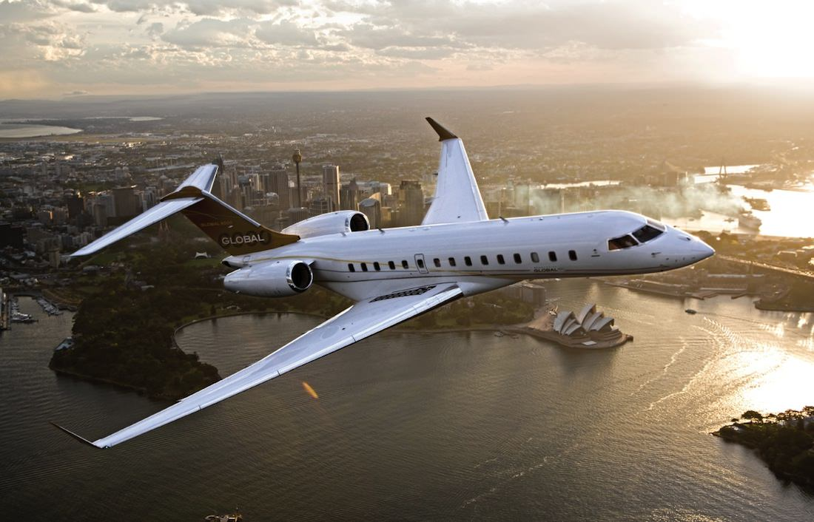
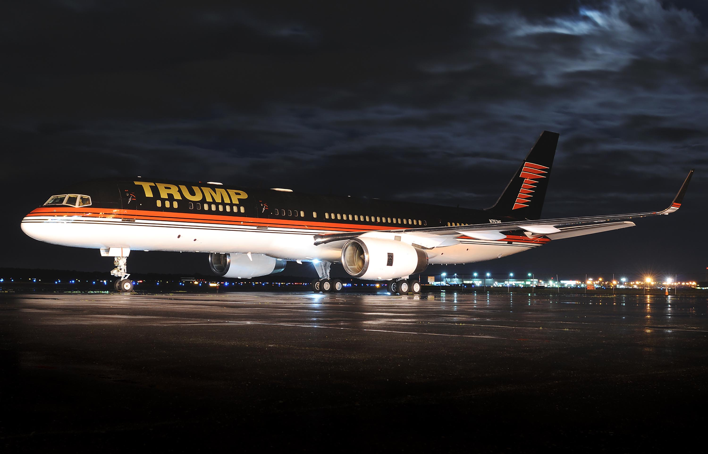

Jet Plane1
Saudi Prince Al Waleed’s Airbus A380:
.jpg)
To date, the most expensive private jet in the world is the Saudi Prince Al Waleed’s Airbus A380. This aviation jewel is worth the incredible sum of 500 million dollars, making it is the most expensive private jet in the world.With an initial cost of 300 million euros, the prince then paid another 200 million to enjoy:
a dining room for more than 10 people
a relaxation area with spa and sauna
a prayer room
a royal viewing area with grand piano
marbled water features
a personal stadium for entertainment
The luxury colossus also regularly transports all types of cargo. Equipped with a garage and a stable, the Saudi prince can travel whenever he likes without ever leaving his luxury Rolls-Royce cars and his favorite horses and camels.
The 500 square meter, two-level A380 also has a long staircase, a throne in the center of the aircraft and even a room with a transparent floor to view the landscape below. Lastly, the successful businessman wanted to install a large, opulent meeting room.
Total cost: $500 million.
Back to Top
Jet Plane2
Céline Dion’s & Bill Gates’ Bombardier 8000

Bill Gates and Céline Dion have one thing in common: they have both built on Canadian aviation excellence. The Bombardier 8000 is a new-gen aircraft that entered service in 2019 at a cost of $66 million. The twin-engine jet is as efficient as it is comfortable, with 17 passenger seats and an unrivaled flight range that sets it apart from the competition. It offers completely custom-built suites, giving the customer a wide range of layout and design possibilities.
Total cost: $66 million.
Back to Top
Jet Plane3
Donald Trump’s Boeing 757

The $100 million Boeing 757 takes Donald Trump to 8th place in the rankings. Like the former president, the interior of the renowned luxury plane VC-25A is either love-it-or-hate-it. Between the cushions sewn with the Trump family’s emblem, the sports room and the bathroom with its gold sink, more is definitely more.
Total cost: $100 million.
Back to Top